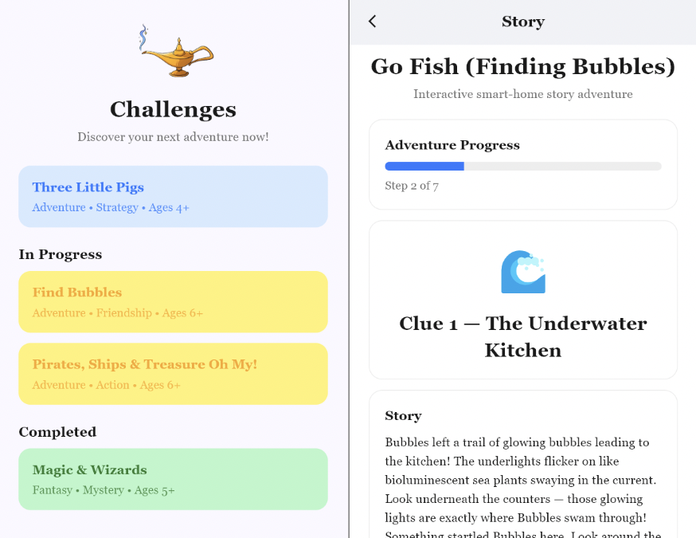
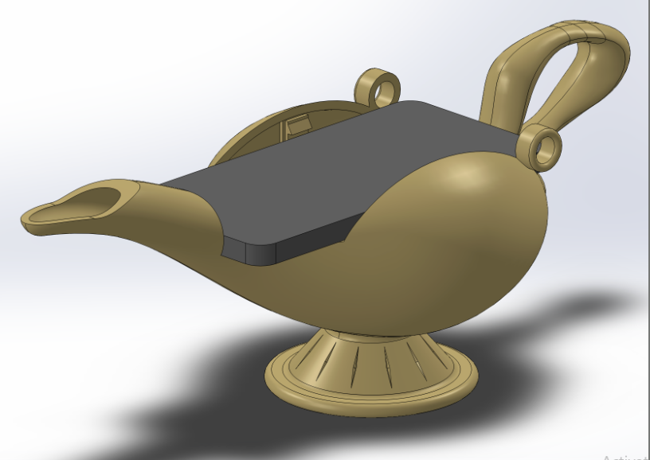

In this project, a team of four created Genie: an interactive storytelling app that turns a smart home into a physical story experience for children. Built for iOS using Flutter, it communicates with the Georgia Tech Aware Home's Home Assistant platform to coordinate audio narration, on-screen visual prompts, and real-time IoT device actuation from a single interface. Rather than keeping a child seated in front of a screen, Genie distributes a story across rooms in the home, requiring the child to move through the space as the narrative progresses. The pilot story, "Finding Bubbles," guides users through the Aware Home using sequentially activated lights, smart blinds, and color-changing LED effects to bring an underwater adventure to life.
Around 81% of children aged 5-8 regularly use tablets, and high screen time is associated with reduced physical activity, lower developmental test scores, and fewer opportunities for motor and social skill development. Rather than cut out mobile device usage to encourage physical activity, this project combined mobile devices with physical activity to encourage children to be more active and creative.
The narrative engine loads stories from structured JSON files, where each step contains narration text, an emoji and title for the screen, and a list of device actions to trigger. When a step is entered, the app fires all device actions concurrently over the local network via Home Assistant REST API calls, then begins audio narration through the device's text-to-speech engine. Although there are some graphics on the screen, audio is the primary mode of communication and the screen is kept minimal to encourage physical interaction. The IoT devices serve two roles. First, they guide the child through the home to the correct rooms where the story will progress, such as a series of lights turning on telling the child to walk down a hallway. Second, they set the mood of the story more by dimming lights and closing blinds during scary scnees. A custom 3D printed genie bottle was also designed to hold the mobile device securely during play.
A user study with five participants in the Aware Home found that all five completed the full experience with minimal assistance. Post survey scores were strong across all dimensions: UI intuitiveness scored 4.8/5, enjoyment 4.6/5, navigation clarity 4.4/5, and immersion 4.2/5. Researchers observed participants visibly turning toward lighting changes and moving between rooms in response to story cues rather than focusing on the device. One notable finding was a photosensitivity concern flagged by two participant over the lightning flash effect, which were then replaced with slower, less intense flashing. Overall, Genie validated that immersive, physically interactive storytelling can be effectively embedded in a smart home, and established a solid architectural foundation for additional stories, richer actuation, and eventual dynamic narrative generation.

